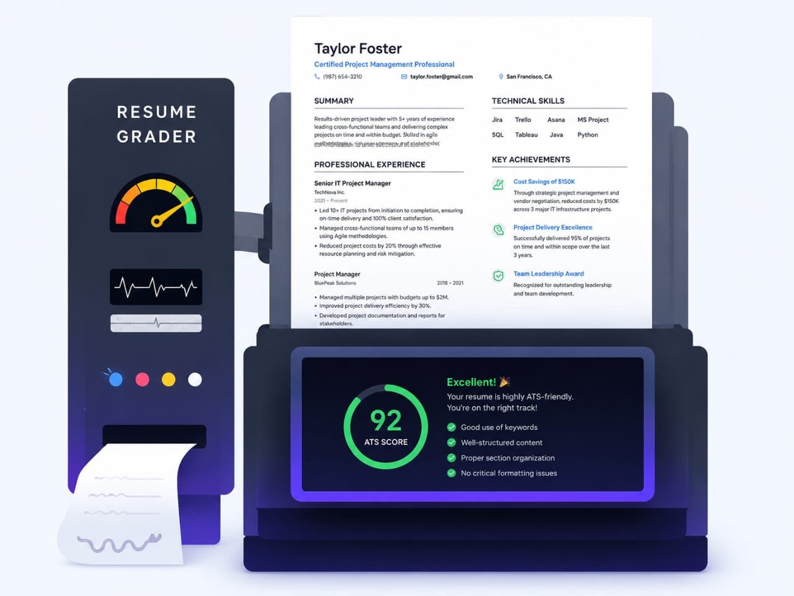

🚀 AI Powered ATS Resume Intelligence
Upload your resume and receive an instant ATS score, keyword analysis, grammar suggestions, resume improvements, and job description matching.
Keyword Match
Grammar
Formatting

ResumeIQ AI is designed to help job seekers create stronger, ATS-friendly resumes that stand out in today's competitive job market. Many companies use Applicant Tracking Systems (ATS) to screen resumes before they reach a recruiter, and a poorly optimized resume can be rejected even if the candidate is qualified. Our platform analyzes your resume, evaluates its ATS compatibility, checks for important keywords, and identifies areas that need improvement. It then provides clear, personalized suggestions to help you enhance your resume's quality and effectiveness. Whether you're a student, a fresh graduate, or an experienced professional, ResumeIQ AI makes resume improvement simple and efficient. By helping you optimize your resume with practical feedback and intelligent analysis, the platform increases your chances of passing ATS screening, attracting recruiters, and securing more interview opportunities with confidence.
Resumes Analyzed
Accuracy
Companies
Reports Generated
Upload your resume now and increase your interview chances.
Get Started